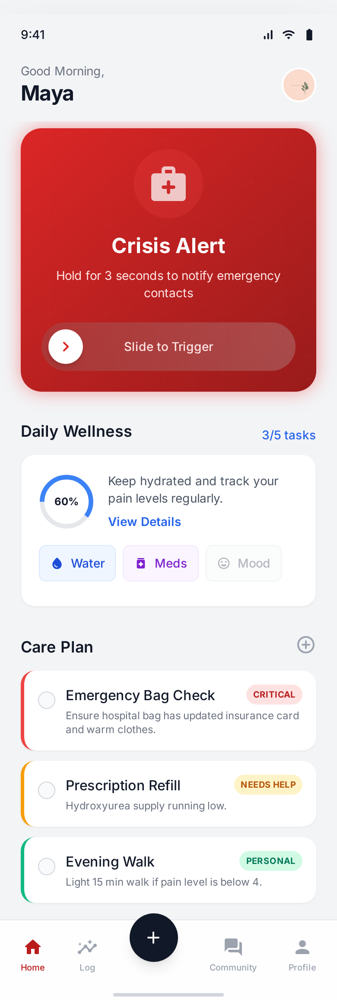
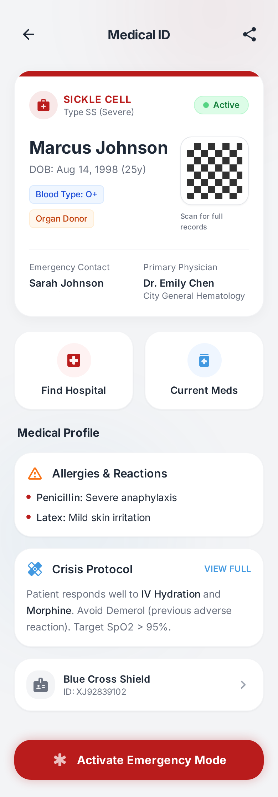

Never Face a
Crisis Alone
Built for people living with sickle cell disease. Track pain crises, log hydration, manage medications, and keep your personal Circle of Care a message away — all in one app.
Join 500+ people waiting for launch. No spam, ever.

Millions live with SCD worldwide.
Most face crises without coordinated support.
Living in the United Kingdom are affected
ER visits per year average
Caregivers feel unprepared
Apps built specifically for sickle cell self-management
"Until now."
The Overcomer
Built for Sickle Cell Warriors
Your health, your way. SickleSafe gives you everything you need to manage sickle cell — from tracking daily wellness to activating emergency SOS in a single tap.
- Pain crisis tracking — log severity, duration, and triggers to spot patterns early
- Hydration logging with daily targets and customisable reminders
- Medication reminders and adherence history in one place
- Emergency SOS — slide to call 112 and message your Circle of Care directly
- Your personal Circle of Care — family, friends, and clinicians in one secure network
- Offline Medical ID with QR code — readable by hospital staff without internet
One Tap.
Everyone Knows.
In a medical emergency, always call 112 immediately.
SickleSafe supports your care — it does not replace emergency services.
Tap Crisis Button
One tap activates emergency mode with haptic confirmation.
Tap Crisis Button
One tap activates emergency mode with haptic confirmation.
112 Called Instantly
Sliding the SOS button immediately calls 112 emergency services.
Circle Notified
Instant push alerts to everyone in your Circle of Care.
Circle Notified
Instant push alerts to everyone in your Circle of Care.
Circle Messaged
Your trusted contacts are messaged directly so your support network knows you need help.
When You Slide SOS
Your Circle Receives
"Post-crisis logs are automatically generated for your next hospital visit."
Your Medical ID.
Always accessible.
In an emergency, Wi-Fi isn't guaranteed. Your Medical ID card works completely offline, storing critical information that could save your life.
-
01
Blood type & Subtype
Critical for transfusions and treatment decisions.
-
02
Allergies & Restrictions
Prevent dangerous drug interactions.
-
03
Emergency Protocol
Step-by-step instructions for first responders.
-
04
Instant Scan
QR code works without internet. Shareable via SMS.

Four steps to peace of mind.
- 01 Download & Create Your Profile
- 02 Set Up Your Medical ID
- 03 Build Your Circle of Care
- 04 Track & Stay Protected
Built for
real life.
Health Logging
Track pain levels (1-10), hydration intake, medication adherence, mood, and crisis triggers daily. Build a comprehensive health timeline that helps you identify patterns.
- Pain Tracking (1-10 scale)
- Hydration Monitoring
- Medication Adherence
- Mood & Trigger Logging
Circle Messaging
Direct and group chats with your care team. Share updates, voice messages, and coordinate care together without the chaos of multiple group chats.
- Group & Direct Chats
- Voice Messages
- Real-time Updates
Stay Organised
Keep on top of your care between appointments. Log medications taken, track upcoming doses, and message your Circle of Care directly from the app.
- Task Assignments
- Status Tracking
- Push Notifications
Built for real life.
Every feature designed with input from patients, caregivers, and the SCD community.
Health Logging
Track pain levels (1-10), hydration intake, medication adherence, mood, and crisis triggers daily. Build a comprehensive health timeline that helps you identify patterns and share insights with your care team.
Circle Messaging
Direct and group chats with your care team. Share updates, voice messages, and coordinate care together. Keep everyone informed without the chaos of multiple group chats.
Stay Organised
Keep on top of your care between appointments. Log medications taken, track upcoming doses, and message your Circle of Care directly from the app.
Common questions.
Get Early Access
Be among the first to experience Sickle Safe when we launch.
Application Received
We will review your application and contact you within 48 hours.